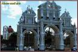

"IGLESIA DE SANTO DOMINGO
Y EX CONVENTO"
El Templo y Ex-convento Dominico, componen una
auténtica joya arquitectónica que data del siglo XVI,
construido por la orden de los dominicos, alrededor de 1552
se iniciaron los trabajos de construcción esta fecha se
encontraba en el segundo arco de la bóveda de la iglesia
después del acceso.
Se dedicó al culto en 1612 fecha que podemos observar en la
fachada del templo debajo de la ventana del coro,
en donde encontramos el escudo dominico, dentro del templo
al centro podemos observar el retablo de estilo churrigueresco
laminado en oro donde se encuentra la imagen de
Santo Domingo de Guzmán, a los lados los Santos Patrones de los barrios
la capilla de la Virgen de la Soledad, la pila bautismal
tallada monolíticamente en cantera que por su hermosura y dimensiones
causa asombro, tiene un diámetro de 2.27 metros, dentro del ex convento
destacan retratos de santos, cardenales, sacerdotes y religiosas de
la orden dominica, que debieron ser pintados entre
los años de 1630 y 1667
**EL TÚNEL DE SANTO DOMINGO**
En tiempos de la colonia, los ministros de la Santa Iglesia en México
realizaron la construcción de dos importantes sedes para evangelizar
el valle de Itzocan –que actualmente es la región de
Izúcar de Matamoros, al sur del Estado de Puebla: el del Apóstol Santiago
y el de Santo Domingo, que originalmente era un convento.
En torno a ambos hay muy hermosas y prodigiosas historias.
La presente es sólo una de ellas, y ocurrió allá por los años
transcurridos entre los de la Revolución Mexicana y los que se vivieron
agitados por la Guerra Cristera. ----* --- ubicado en: Ex-Convento de Santo Domingo
Independencia, Centro, Izúcar de Matamoros, Pue.


*EX CONVENTO DE HUAQUECHULA*
Arquitectónico Religioso: Ex-convento de Huaquechula;
en el siglo XVI dio inicio una nueva era de hispanidad;
en esta época, fueron arribando órdenes religiosas
a la República Mexicana, siendo la orden Franciscana
la primera en llegar para ser precisos en 1524.
La orden llegó en 1530 y empezó a recluir gente para que
ayudaran a levantar el convento y el templo. La gente indígena
inició la planta baja en 1531; ya finalizada, la construcción
pasa a manos de Fray Juan de Alameda y lo termina en el año de 1580
haciendo de esta el primer convento en el Municipio de Huaquechula.
vista lateral del ex-convento franciscano
El ex-convento de Huaquechula se muestra en su totalidad en estado original.
En la parte exterior destaca su enorme muro almenado y los tradicionales elementos
que componen un exconvento.
Los muros importantes son: el atrio, la cruz atrial,
la capilla abierta, la iglesia, la portería, una capilla posa
que nos muestra el inconfundible paso de tiempo, el convento y el claustro.

** TEMPLO DE SANTIAGO APOSTOL **
Santiago el Mayor, cuya imagen es
venerada en este santuario de Izúcar de Matamoros,
La ciudad de Izúcar de Matamoros
fue el polo de atracción de grandes
caravanas de creyentes, que visitaban el lugar para
dar fe del milagro realizado, los que conocieron al
extraño escultor notaron que el santo tenía las mismas
facciones, no había la menor duda; fue el mismo
Señor Santiago el que, sabiendo que nadie pudo hacer su
imagen, se presentó ante los matamorenses para complacer
el gran fervor que sentían por él.
Al colocar la escultura en el altar mayor de la iglesia
está fue muy grande para las dimensiones arquitectónicas
razón por la cual, se tuvo que construir una cúpula más.
En la actualidad el Templo es considerado como santuario
y la imagen que se venera y cuya devoción se ha extendido
por todo México, incluso por el extranjero es reconocida como
la escultura en veneración más grande de América Latina.
* Informacion:
Zona Pastoral: Sur
Decanato: Matamoros
Dirección: Av. Centenario esq. Corregidora # 2
Colonia: Centro
Ciudad/Municipio: Izucar de Matamoros, Puebla
CP.: 74400
Tel: (243) 436 34 13


EX CONVENTO DE TEPAPAYECA
El ex Convento de la Purificación de Santa María Tepapayeca,
erigido en 1550 en Puebla, y la zona arqueológica del mismo poblado,
forman parte del proyecto de rescate que emprende el Instituto Nacional
de Antropología e Historia (INAH) de 2012 a 2015, el cual concluyó la primera
etapa de investigación histórica y en 2014 inicia la segunda fase de diagnóstico,
para posteriormente analizar las propuestas e intervenirlos.
La investigación histórica incluyó un registro etnográfico del ciclo
ritual y festivo de la población de Tepapayeca, que comenzó el 2 de febrero
con la fiesta patronal dedicada a la Purificación de María, y continuará en Semana Santa,
Día de Muertos, Santa Cecilia en noviembre y la Virgen de Guadalupe en diciembre.